The Hunt for the First Harry Potter Card: A Field Guide to 2000-2001
I’ve been collecting Harry Potter cards since 2021. My close friends in the collecting world and I like nothing better than a deep dive to track down obscure releases that might predate the generally accepted first appearance card of an athlete, a famous person, or a fictional character. With that mindset, I’ve continuously sought out the earliest Harry Potter releases and tried to work out which ones are actually the most interesting for a collector to own. This piece is the result of organizing those ideas into something coherent.
One thing that decades of collecting have taught me: there is always something earlier out there (check Argentina!). So as I’m writing this in September 2026, treat everything here as a snapshot rather than a final word. Some of it will likely need updating as more information surfaces. There will likely be years of debate as to what the first appearance card of Harry Potter is. But does it matter? I thought a collector in one of my Discord groups put it very well (shoutout not_so_sharp_corners!) when he compared it to the 1957/1958 Pele rookies. As a vintage soccer collector you can debate which Pele rookie is first, but it doesn’t matter in the end because they are all super cool and worth having in your collection.
A general note on dating: these products came out in the early days of the internet, when almost nobody was systematically documenting card and toy drop dates the way collectors do now. As more people start paying attention to this early window of Harry Potter collectibles, more primary documentation will likely surface, and the order of releases in this piece may well need to be revised as a result. This especially applies to the four Mattel products: their product numbers give a likely relative order, but a lower number doesn’t guarantee an earlier ship date, and several of these carry the same 2000 copyright year despite that copyright date not necessarily matching the actual date the product hit retail shelves. A product copyrighted in 2000 could easily have shipped in early 2001. Where a primary source directly confirms a date, that evidence is weighted more heavily than product number sequence alone, which is why this piece lists the Trivia Game and Mystery at Hogwarts ahead of Quidditch and UNO, even though Mattel’s own numbering (42748, 42751, 42753, 42754) would suggest a different order. Treat the Mattel ordering in this piece as a reasoned best guess, not a settled timeline.
A note on dates generally: wherever I give a specific month, I’ve tried to show exactly how I got there, whether it be a direct source, an inference, or an outright unverified collector account, rather than stating precision I can’t actually back up. Several dates in earlier drafts of this piece turned out not to hold up under a second look, so I’d rather be transparent about the shakier ones than drop them in as fact.
Other Products Not Covered Here
A handful of other early 2000s Harry Potter games exist that aren’t given their own section in this piece, because none of them contain actual character cards, the core requirement for inclusion.
That said, this piece does include a couple of items without character cards (the Grolier card and the Mattel Trivia Game, specifically), because they’re among the very earliest cards to depict the Harry Potter universe at all, character card or not, and that earliness earns them a place here that the other non-character products listed below don’t get.
From Mattel, per direct correspondence with illustrator Shawn McKelvey: the HP Casting Stones Game (2001, product #42750, notably sitting between two of the confirmed 2000 titles in Mattel’s own numbering, a second real example of why product number alone can’t be trusted for dating), the HP Diagon Alley board game (2001), the HP Adventures through Hogwarts 3D castle board game (2001), an HP chapter games series (2001), the HP Halls of Hogwarts board game (2002), and the Hogwarts Dueling game (2004).¹
Separately, two 2000 copyright Harry Potter games were published not by Mattel but by University Games, a game and puzzle publisher founded in 1985 by Bob Moog and Cris Lehman and headquartered in San Francisco, California.²
- Harry Potter Quidditch The Game, a physical board game with a board, six golden hoops, a Quidditch launcher, a plastic quaffle ball, and “slow potion” and “no effect” tokens. Developed by Hasbro and published by University Games. Unrelated to Mattel’s card based Quidditch Card Game beyond the similar name.
- Harry Potter and the Sorcerer’s Stone The Game, six 10 inch by 10 inch game boards built around six mini challenges mirroring the obstacle course from the first book: Hagrid’s Challenge (Fluffy), Sprout’s Challenge (the Devil’s Snare), Flitwick’s Challenge (the Winged Keys), McGonagall’s Challenge (a chess mini game, with real chess rules included), Quirrell’s Challenge (the Troll), and Snape’s Challenge (Secret Potions). The box includes three card decks, but they’re tied to these puzzle mechanics, not character portraits. No Harry, Ron, or Hermione cards anywhere in the set.
A separate 2001 lenticular Chocolate Frog style series also exists (sometimes listed as “Wizards” Harry Potter cards, though the checklist source attributes it to Cap Candy/Warner Bros.), 24 cards in total, illustrated by eight commissioned artists including Terese Nielsen.³ It isn’t included in this piece because the subjects are secondary and tertiary characters from the books’ in-universe wizarding history (Newt Scamander, Merlin, and similar figures), not the major characters this project is centered on. I genuinely love the aesthetics of these cards, but this project is really about finding the earliest cards of the major characters, not a complete survey of every early 2000s Harry Potter card that exists.
European Harry Potter playing cards from Cartamundi, carrying a 2001 copyright, also exist and aren’t included here. Playing cards are generally treated as a second-tier category by collectors, the same bucket the Mattel UNO deck falls into, and with a copyright a year later than that UNO deck, they don’t clear the bar for inclusion in this piece.
Worth mentioning, though not Harry Potter cards themselves: two more entries from Grolier’s Life in America series, the same general Grolier subscription-card program that produced the “Story of America” Harry Potter Books card covered as Card #1 below (Deck 132). These two merely mention or depict Harry Potter in passing, as part of unrelated subjects, but the mentions are notable enough to flag here.
Grolier, “Presidential Race Heats Up” (Deck 131) covers the 2000 presidential campaign, and features an editorial-cartoon-style illustration of a man holding a book titled “Harry Potter,” with the caption “I think I’m voting for this Harry Potter.” This isn’t a Harry Potter card, and Harry’s appearance is a punchline about a crowded, uninspiring field of candidates, not a depiction of the character. The card’s own “When” field lists the covered event window as October 1999 through March 2000, but that describes the primary season it reports on, not necessarily the card’s print date; the card back also discusses the January 24 Iowa caucus and February 1 New Hampshire primary results in a reported, after-the-fact tone, and carries a “© Grolier Inc. MM” copyright mark, MM being 2000 in Roman numerals. Being one deck earlier than the already-covered Deck 132 (dated Spring/Summer 2000) also points to a date very close to that, not months earlier. Taken together, this suggests Deck 131 itself was likely printed and distributed in roughly March–April 2000, right around the end of the primary season it depicts, rather than back in 1999. That estimate is also consistent with how PSA’s own population reports treat this series: PSA’s population data for this Grolier “Life in America” program is organized into set-level year buckets (a 1997 bucket and a 2000 bucket turn up for the series; no 1999 bucket appears), which lines up with a 2000 date for this card rather than 1999. Whatever the exact date, it’s one of the earliest namechecks of Harry Potter anywhere in this survey, worth flagging even though it doesn’t belong on the numbered list.
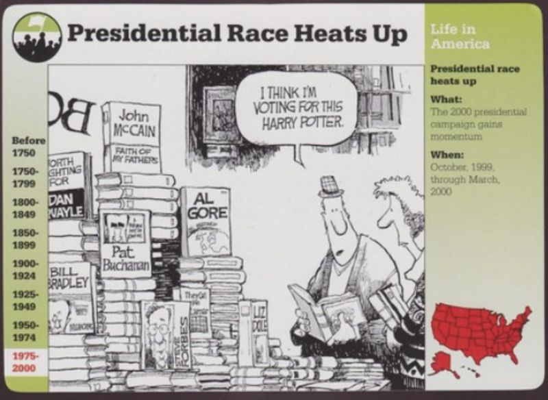
Grolier, “Tops in Toys” (Deck 139) covers a February 2001 toy industry exhibition in New York City, and its photo shows Harry Potter merchandise (a Tiger Electronics handheld game box and a Gryffindor-branded item) alongside a costumed werewolf figure. It isn’t a Harry Potter card either, and it comes from a later deck than the already-covered Deck 132, but it’s a good example of how quickly Harry Potter merchandise had become ubiquitous enough to show up as set dressing in an unrelated toy-industry story.
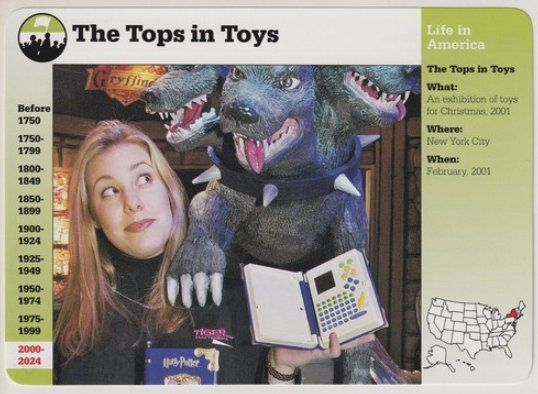
1. Grolier “Story of America,” The Harry Potter Books (Deck 132, Card 5)
Date: Spring/Summer 2000, based on the numbering system used by Grolier’s monthly subscription series.
This was a monthly educational subscription card from Grolier’s long running Story of America series that happens to be about the Harry Potter books. It shows a teenage fan reading the third book, not Harry himself.
What I like:
- Very likely will always be the earliest graded card depicting the Harry Potter universe. Based on the numbering system used by Grolier, this was a Spring/Summer 2000 release.
- PSA already grades this card and lists it as 2000.⁴
- Real hobby precedent for treating cards from this exact series as legitimate “firsts”: Bill Gates (#40-3, 1996) and Steve Jobs (#119-3, 1998) are both actively marketed as rookie-type cards from the same product line.⁵
What I don’t like:
- Oversized cards are generally less preferable to most collectors.
- It is not an actual character card of Harry Potter.
- Mail order distribution system is not considered equivalent to randomized pack distribution by many hobby “purists.”
- Aesthetics: 4/10. Oversized is a minus, and the design itself is pretty meh.
Front:
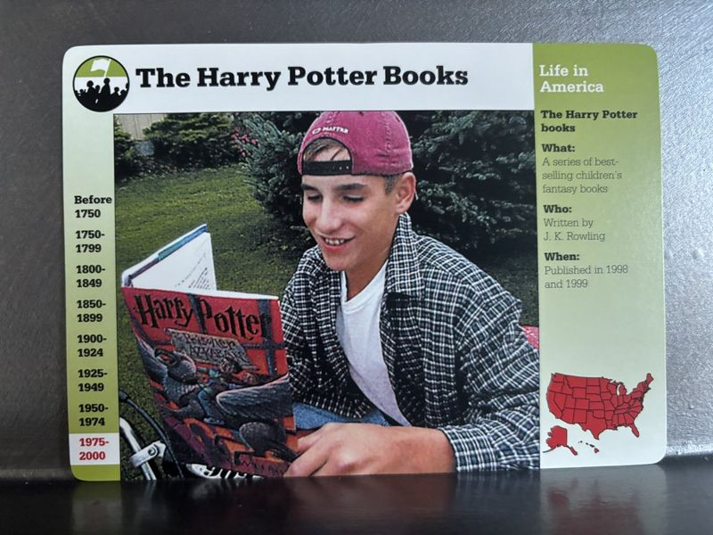
Back:
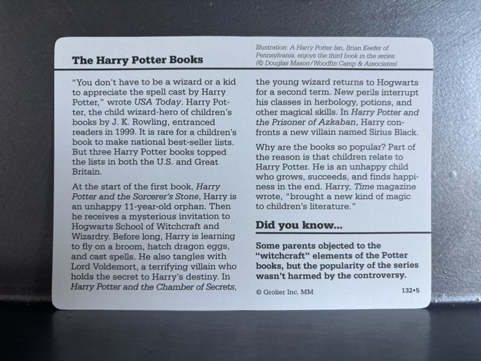
2. “Magic Will Happen” Vending Machine Cards
Date: Likely mid 2000, based on the 2000 Warner Bros. Gallery “Magic Will Happen” Christmas plate predating WOTC’s 2001 reuse of the same tagline, and supported by the card’s original (rather than copied) artwork.
The tagline “Magic Will Happen” was used by Warner Bros. in 2000 to promote the upcoming movie for the following year. There was a licensed holiday plate released in late 2000 that used the same tagline: a Warner Bros. Gallery collector’s plate, limited to an edition of 1,200, with the plate back reading “MAGIC WILL HAPPEN / Harry Potter / WB Gallery” and carrying a “TM & © 2000 Warner Bros.” mark. This is useful supporting evidence for dating the tagline itself to 2000, independent of these specific vending machine cards: it shows Warner Bros. was already using “Magic Will Happen” as an official promotional phrase for the franchise a full year before WOTC reused the same tagline in 2001.
Unlicensed vending machine cards were a real, if barely documented, corner of the collectibles world in the late ’90s and early 2000s. These were cheap, quarter machine novelty cards riding the coattails of whatever franchise was hot that year. Almost nothing about this specific practice survives in any searchable record. There was no trade press coverage, no manufacturer history, nothing indexed. What we have instead is oral history: a collector in a Facebook group reporting he obtained his copies directly from vending machine stock, an eBay seller who says his relative used to stock vending machines in the late ’90s and passed these down to him, a third seller, contacted directly, who confirmed buying his cards at a card show in 2000, and a fourth seller, located separately, who reports obtaining his cards directly from gumball machines in 2000.⁶ None of these is independently verifiable, but all four point the same direction, from four unconnected sources.
One more small piece of internal evidence worth noting: if this card were made later, once Mattel art, official WOTC card art, and eventually movie stills were widely available, the cheap and obvious move for an unlicensed maker would have been to trace or lift that official art wholesale. Instead, these cards use original illustrations. That’s more consistent with an earlier window, before there was much “official” imagery in circulation to steal from. If a later unlicensed printer was going to put out some cards to try to sell, it would also seem unlikely that they would include many cards of minor characters and magical creatures that presumably would not be as movable as cards of the major characters.
What I like:
- Are these the first Harry Potter cards ever? Could they actually predate Grolier? Are these possibly even 1999? A genuinely open question.
- Aesthetics: 8/10. Weird art that depicts the characters in a unique fashion, inconsistent with book illustrations, but they look great in hand.
- Many collectors in various non-sports groups seem to show great interest in these once they hear the story and see the cards.
What I don’t like:
- These may end up being viewed as unlicensed trash. Or they could be viewed as absolute grails of Harry Potter collecting. A total crapshoot!
- Likely unlicensed release, and getting them graded could be an issue. CGC has been known to accept vending machine releases though.
Front:
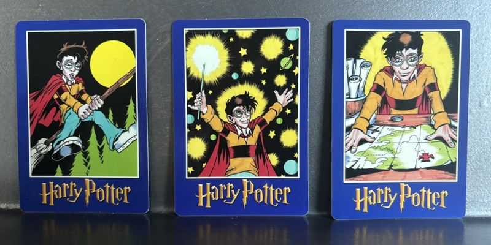
Back:
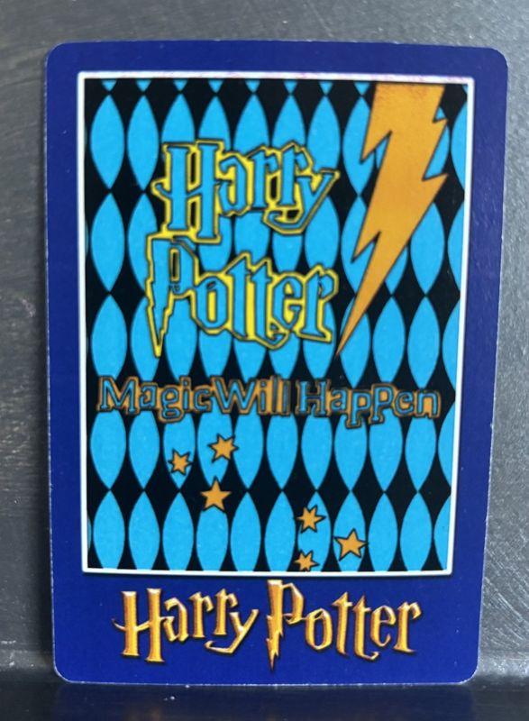
Supporting evidence — 2000 Warner Bros. Gallery “Magic Will Happen” holiday plate:
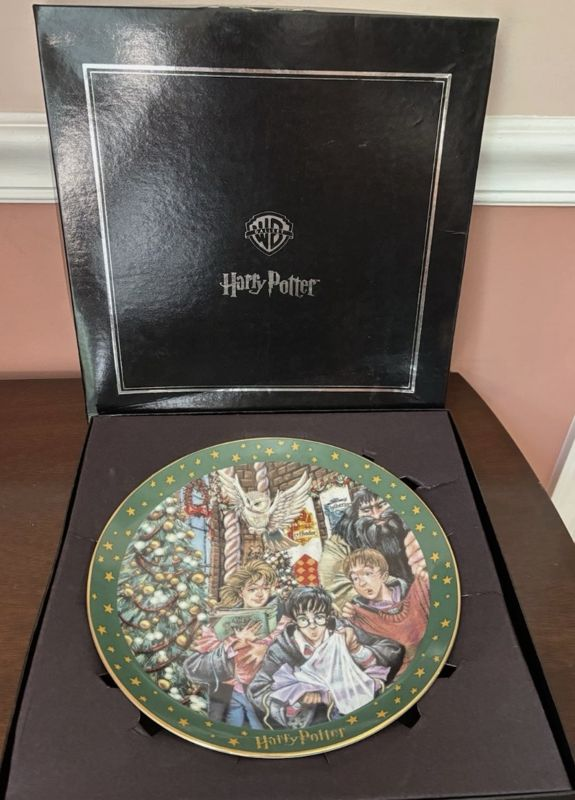
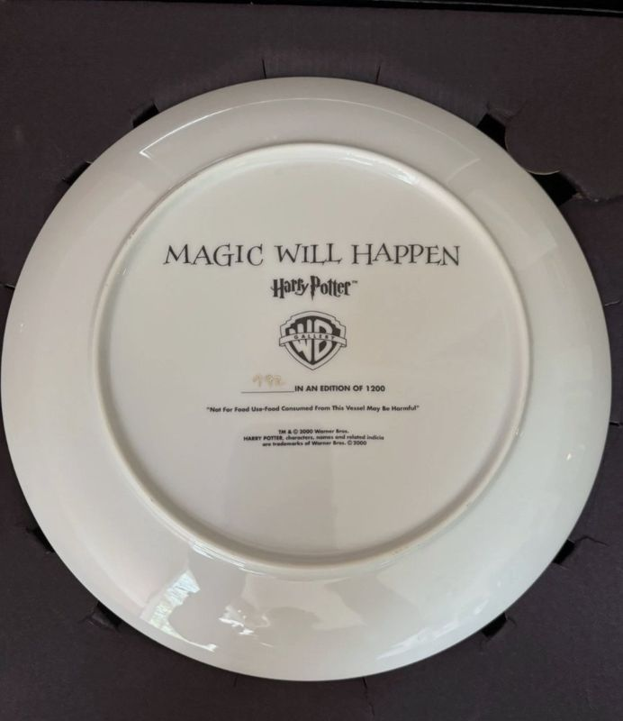
3. Mattel Harry Potter and the Sorcerer’s Stone Trivia Game
Mattel Product#: 42748 Date: 2000 (no specific month; see the dating note at the top of this piece)
The lowest product number in Mattel’s entire 2000 Harry Potter wave, which, based on the product-numbering research, makes this likely the very first of Mattel’s games to actually ship.
What I like:
- Earliest-numbered item of the Mattel cluster. That said, it’s not yet clear whether product releases always follow the product number. If internal Mattel documents could be unearthed, that would be the real way to confirm this.
- If Grolier weren’t in the picture, this would likely be the earliest card in the Harry Potter universe, and that alone would make it quite important.
- As the cards were designed to be played, this keeps the pop count down for pristine cards.
- 2000 copyright.
- Independently confirmed as one of “the first two Harry Potter games released by Mattel in 2000” by Shawn McKelvey, the illustrator who designed and illustrated the game for Mattel, a rare primary source directly confirming the date rather than just an inference from product numbering.⁷
- Aesthetics: 8/10. No character cards, but I like the classic book-inspired art.
What I don’t like:
- No character cards. This means it could never be considered a first-appearance-of-Harry-Potter candidate, regardless of how early it dates.
- Board game card, so less general importance to the average card collector.
Individual House and Charms cards from the deck:
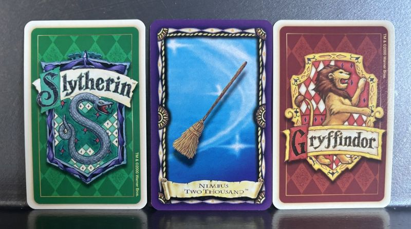
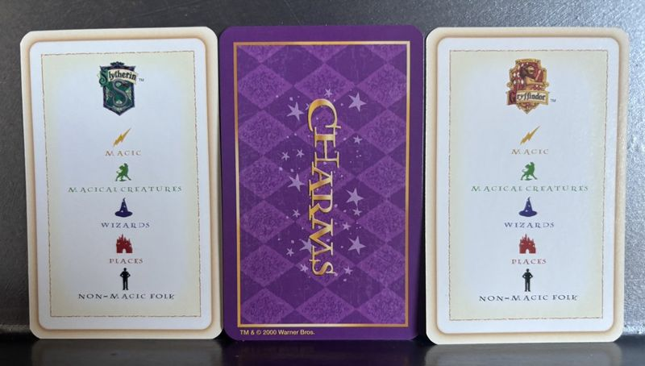
4. Mattel “Mystery at Hogwarts,” Character Cards (US edition)
Mattel Product#: 42754 Date: 2000
A Clue-style boxed board game that includes six named Character Cards. Most cards have rounded corners, but some boxes have square corners. Haven’t figured out if this is random or meaningful. There were also early copyright and approval issues with some of the artwork: according to Shawn McKelvey, the illustrator who worked on this game for Mattel, Malfoy and Crabbe’s card art wasn’t approved by J. K. Rowling in time for the initial print run, so those two characters were replaced with silhouettes and only appeared with real artwork in later printings.⁸ Silhouette versions of Malfoy and Crabbe are confirmed as the earlier printing, per McKelvey.
What I like:
- Very likely the first named Harry Potter card. And therefore it is massively important.
- Aesthetics: 9/10. I am a big fan of how the illustrator captured the essence of the books on these cards.
- Designed for play, so pristine card pop count will likely be low.
- Same McKelvey confirmation applies here too. He illustrated both this game and the Trivia Game, and states directly that these were “the first two Harry Potter games released by Mattel in 2000.” A real primary source nailing down the date, from someone who was actually there making the cards.⁸
What I don’t like:
- Some collectors pooh-pooh board game cards.
- There is a separate UK “Philosopher’s Stone” board game with 2001 copyright, and it’s unclear if the cards are identical or not.
Front:
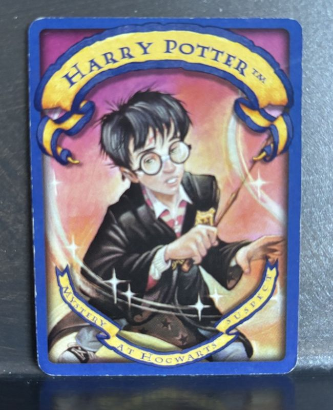
Back:
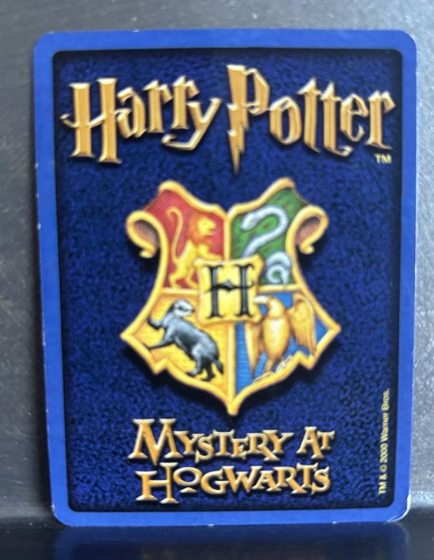
UK/European “Philosopher’s Stone” edition: There is a separate UK/European release of this same board game, tied to the “Philosopher’s Stone” title used outside the US. The character cards differ in one notable way: the US edition’s early printing renders Malfoy and Crabbe as black silhouettes with generic labels (per McKelvey’s account above), while the UK/European edition shows full-color art with full names for every character, Malfoy and Crabbe included. The card back also carries a printed “TM & © 2001 Warner Bros.” mark, a year later than the US edition’s 2000 copyright, and useful dating evidence for this specific variant.
UK/European front:
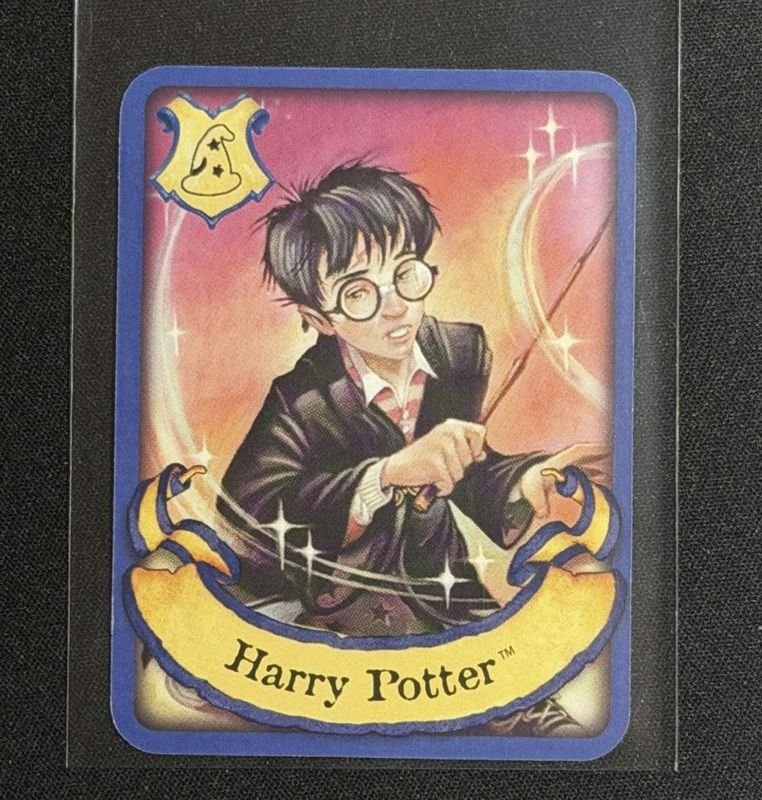
UK/European back:
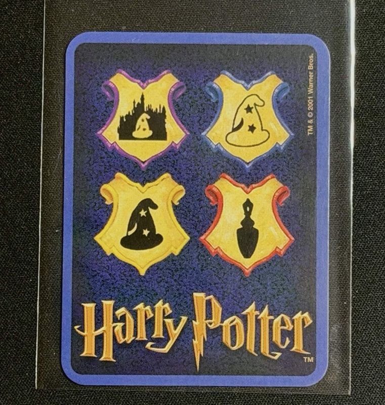
5. Mattel UNO: Harry Potter Special Edition
Mattel Product#: 42751 Date: 2000? (see the dating note at the top of this piece; McKelvey is not sure he had any involvement with this product, so it doesn’t carry the same primary source confirmation as the Trivia Game and Mystery at Hogwarts)
A straight reskin of the classic UNO deck onto a Harry Potter theme.
What I like:
- 2000 copyright.
- Standard playing card dimensions.
- Cards look good in hand.
- UNO cards are generally a gradeable product.
- As the cards were designed to be played, this keeps the pop count down for pristine cards.
- Aesthetics: 7/10. Overall nice, but the numbers and UNO symbols detract.
What I don’t like:
- UNO cards are pretty fringe when it comes to the collecting community.
- If you find a pristine set, there will be 8 of nearly the same card (2 cards each of red, blue, yellow, and green versions).
- Not a named Harry Potter card.
Front:
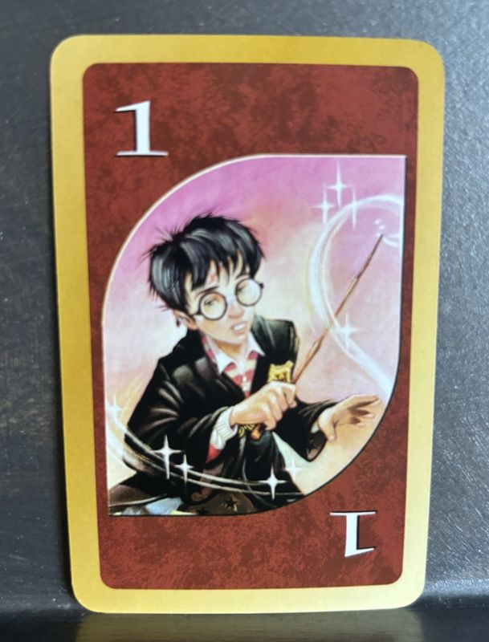
Back:
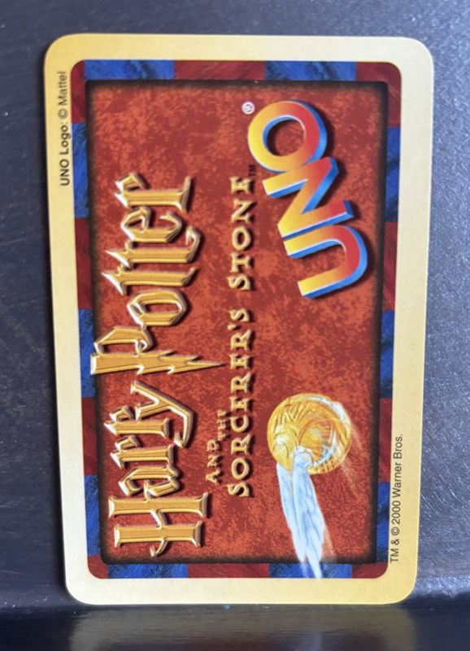
6. Mattel Quidditch Card Game
Mattel Product#: 42753 Date: 2001, per direct correspondence with Shawn McKelvey, despite the cards themselves carrying a 2000 copyright, an example of the copyright-versus-ship-date gap flagged in the dating note at the top of this piece.⁹
What I like:
- 2000 copyright.
- Quidditch is very important to the entire storyline.
- Aesthetics: 7/10. Really good looking cards with an action shot of Harry and the Gryffindor symbol on the back. Numbers on card detract a bit.
- Cards designed to be played, so lower pristine pop count.
What I don’t like:
- On many levels this is similar to the Mystery at Hogwarts game. Even with a lower Mattel product number, this game was apparently released after the MAH board game, per a 2021 retrospective account by Mattel games executive Paul Fish. McKelvey separately confirmed 2001 as the release year in direct correspondence, consistent with Paul Fish’s account.¹⁰
- While there is a card depicting Harry Potter as the Seeker, this is not a named Harry Potter card.
Front:
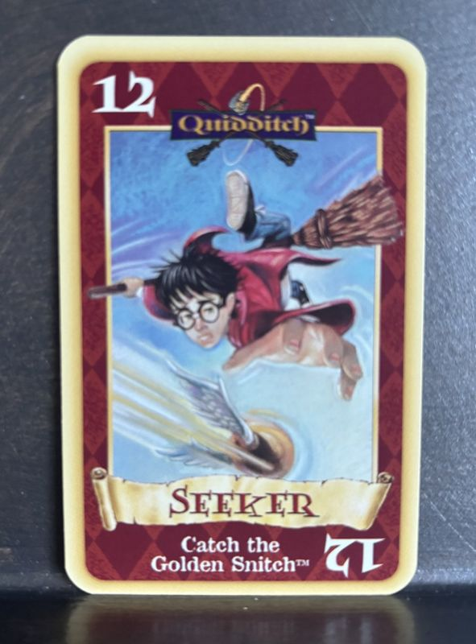
Back:
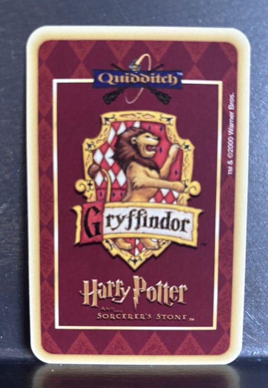
7. Panini “Book Illustration” Sticker Album, “Classic 1”
Date: June 2001¹¹
What I like:
- Holo sticker #2 is considered to be the candidate for Harry’s first appearance (the collecting public is generally unfamiliar with the Mystery at Hogwarts cards).
- Aesthetics: 8/10.
- Full checklist, and the set covers many characters in the Harry Potter universe, possibly the first set to do this, although the Chocolate Frog cards were released around the same time.
What I don’t like:
- In general, most collectors prefer cards to stickers.
Front:
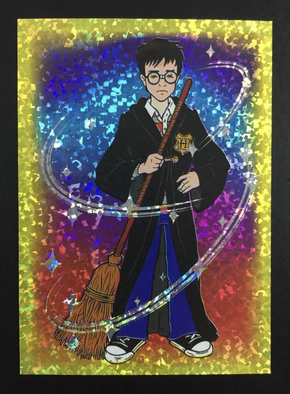
Back:
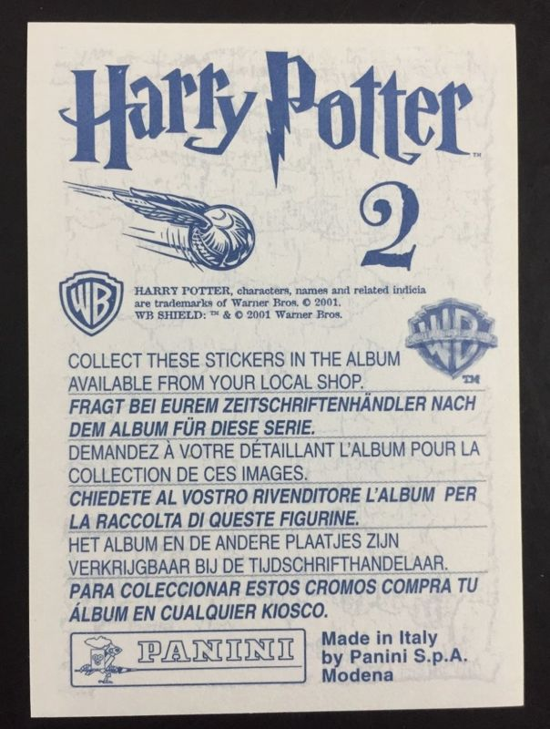
8. Wizards of the Coast Harry Potter TCG, Base Set
Date: August 2001¹²
The default, consensus answer to “first Harry Potter trading card.”
What I like:
- It’s WOTC and a holo, and both of these facts are exciting to many collectors.
- Viewed by the vast majority of current collectors as THE Harry Potter card to have. Many consider this the “Harry Potter Rookie.”
- Will likely always be the most valuable card on this list.
- A true booster-pack TCG with 116 cards.
What I don’t like:
- Appreciation of art is subjective, but the art on this card is bad. Beyond that, the card design itself isn’t good. People love the look and design of first Pokemon TCG cards (1996 Japanese and 1999 English) and the art and design was well received. On the other hand, I have had many collectors tell me that they could never get into these Harry Potter TCG cards because they didn’t like how they looked.
- Again, it’s an ugly card…
- Holo is easily scratched (but this also keeps the pristine pop count low).
- Aesthetics: 2/10 (did I mention that this card is ugly?)
Front (PSA-graded, NM 7):
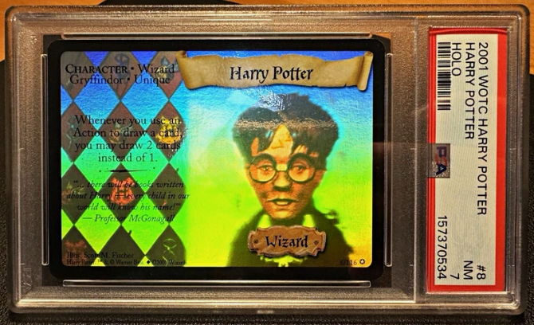
Back (PSA slab):
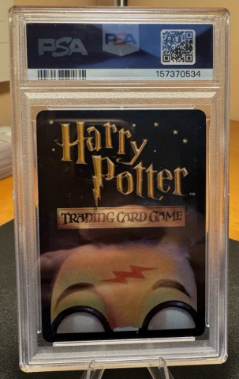
9. UK Chocolate Frog Cards, First Series
Date: Likely August/September, 2001¹³ (possibly as early as June, 2001, but further documentation needed)
There are three distinct regional versions of these lenticular cards, UK, Japan (clear card and lenticular variants), and Asia/Australia, and for collecting purposes I’d personally rank them UK much greater than Japan, which is greater than Asia/Australia.
What I like:
- The UK version ties in great with the book given its UK origin — similar in spirit to why collectors prize Japanese Pokémon cards, a kind of authenticity of place: cultural/textual origin (Rowling’s Britain, the books’ setting). Interestingly, within Pokémon collecting, English cards are actually valued highest, with Japanese a close second and that gap seemingly closing — a real premium for origin, holding up even against the much larger English-speaking collector base. That gap would likely be far bigger if Pokémon were an American property instead of a Japanese one.
- Massively strong scarcity story here. Cards were released with chocolates, and many of these were likely thrown away immediately.
- Aesthetics: 9/10. These are great looking in hand.
- Lenticular cards in general seem to be assigned great value by the general TCG-collecting community.
What I don’t like: Not much.
UK front:
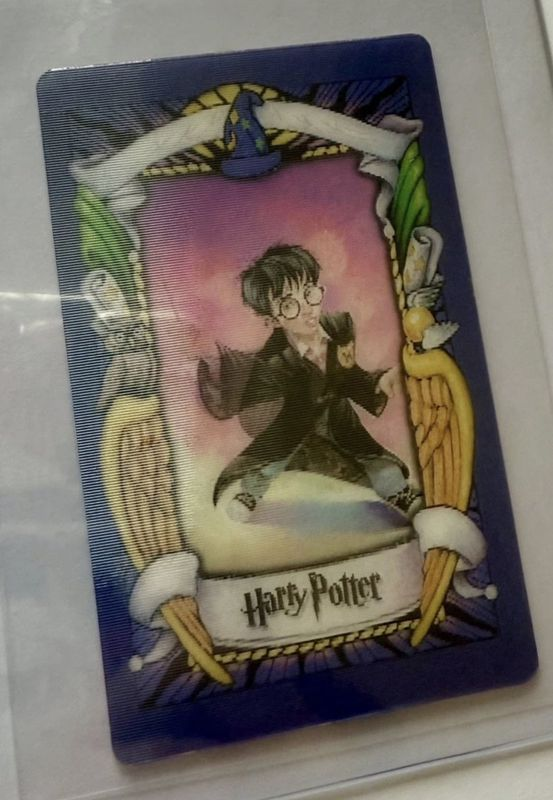
UK back:
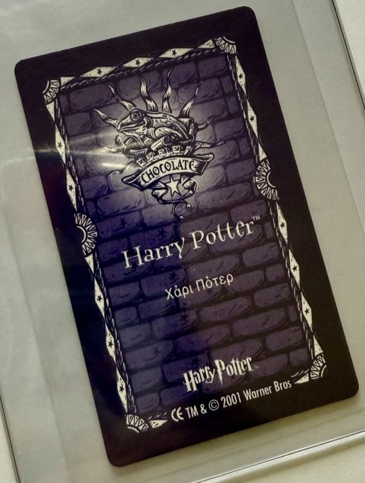
Japan (clear variant) front:
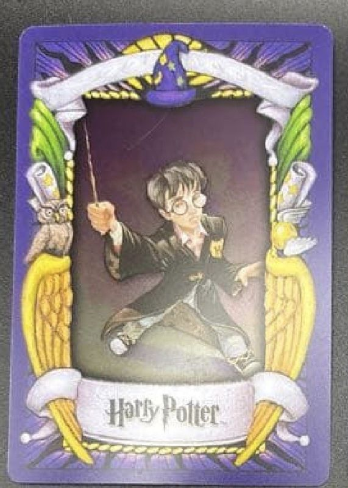
Japan (lenticular variant) front:
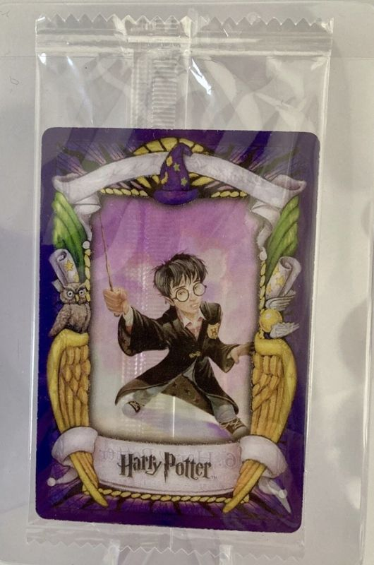
10. Panini “Philosopher’s Stone” Movie Sticker Album
Date: August to November 2001 (exact date undetermined)¹⁴
What I like:
- First release that depicts the well-known actors/actresses.
- Aesthetics: 8/10 for Holos.
- Aesthetics: 6/10 for Gold.
- These actors became famous/popular.
What I don’t like:
- Stickers, not cards.
- Personal preference for illustrations for this franchise rather than photos that tie a specific person to the role.
- Aesthetics: 3/10 for base stickers.
Front (Holo, PSA-graded MINT 9):
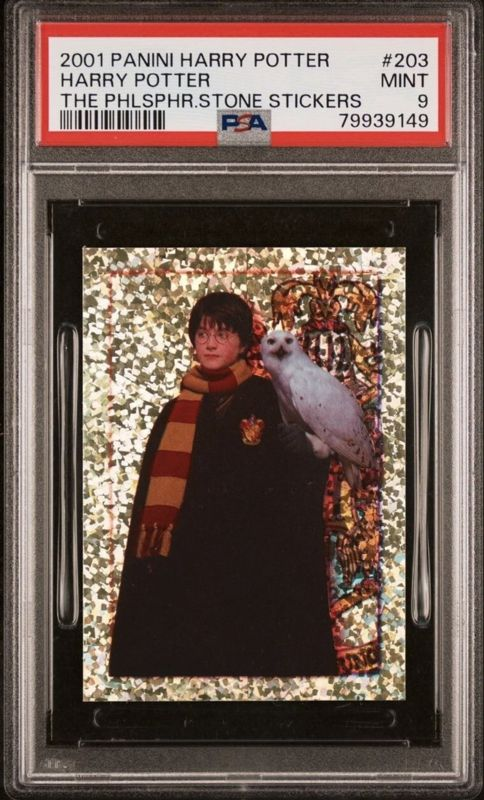
Back (PSA slab):
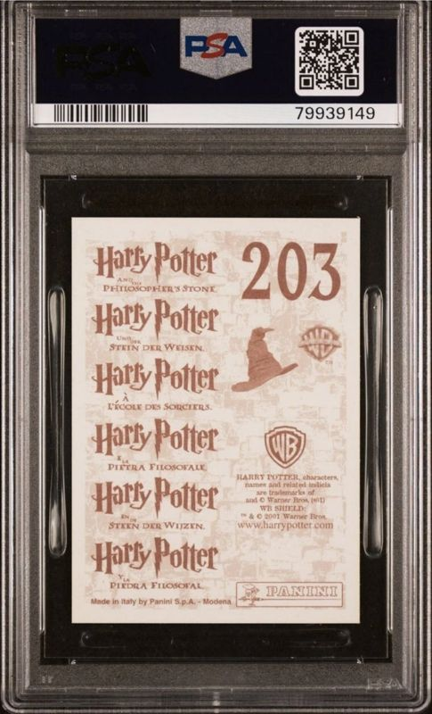
Front (Gold, PSA-graded NM-MT 8):
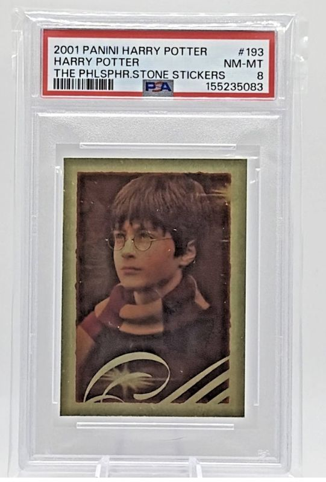
Back (PSA slab):
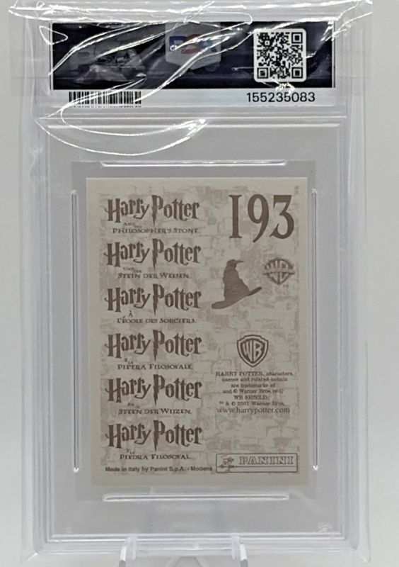
11. 2001 Wizards Harry Potter and the Sorcerer’s Stone
Date: 2001¹⁵
An 81 card set in an unusual 2 1/2 inch by 4 1/2 inch widevision-style format, narrating the film scene by scene (card titles like “Caught!,” “Christmas Gift,” “Through the Barrier!”) rather than standard character portraits. Card #40 in this set is titled “Wingardium Leviosa!,” a different card from the Japan CoroCoro promo of the same name discussed in the next section. The two shouldn’t be confused for each other.
What I like: Not a lot.
What I don’t like:
- Aesthetics: 1/10. The long, rectangular card shape is awkward.
- It really doesn’t have “the first” of anything.
- Would rather collect any other set on this list.
Front:
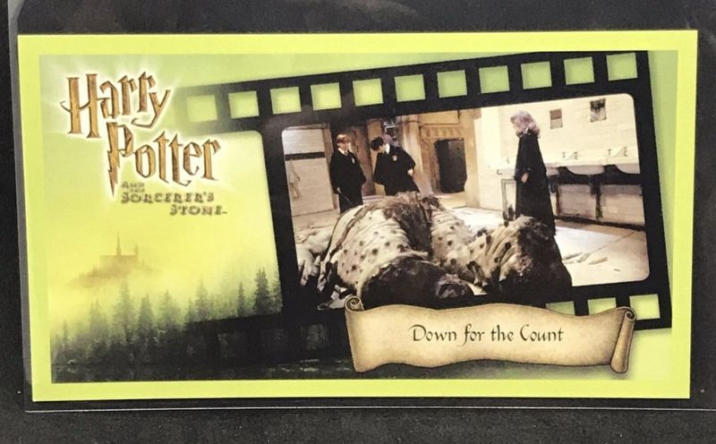
Back:
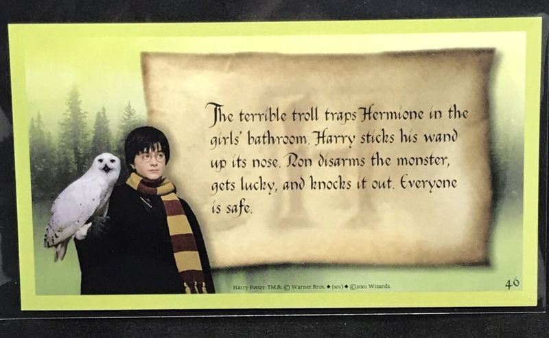
12. Japan WOTC TCG Promos, Illegibilus and Wingardium Leviosa!
Date: 2001 (exact month unconfirmed)
Two confirmed Japan-market promo reprints of Base Set cards, each distributed through a different channel:
- Illegibilus (#92/116, illustrated by James Bernardin), distributed as a promo bundled with the Sorcerer’s Stone PC game.¹⁶
- Wingardium Leviosa! (#111/116, illustrated by Ron Spencer), distributed as a magazine insert in CoroCoro Comic, a Japanese children’s manga magazine.¹⁷
What I like:
- Art is better on these than the basic TCG cards/holos.
- Limited release.
- Aesthetics: 8/10.
What I don’t like:
- Very likely a later release than all the others on this list.
- English cards are generally more popular than foreign language cards despite Japan having a very strong collecting population.
Illegibilus front:
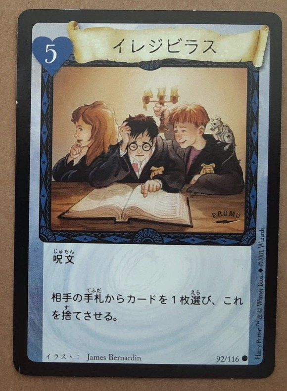
Wingardium Leviosa! front:
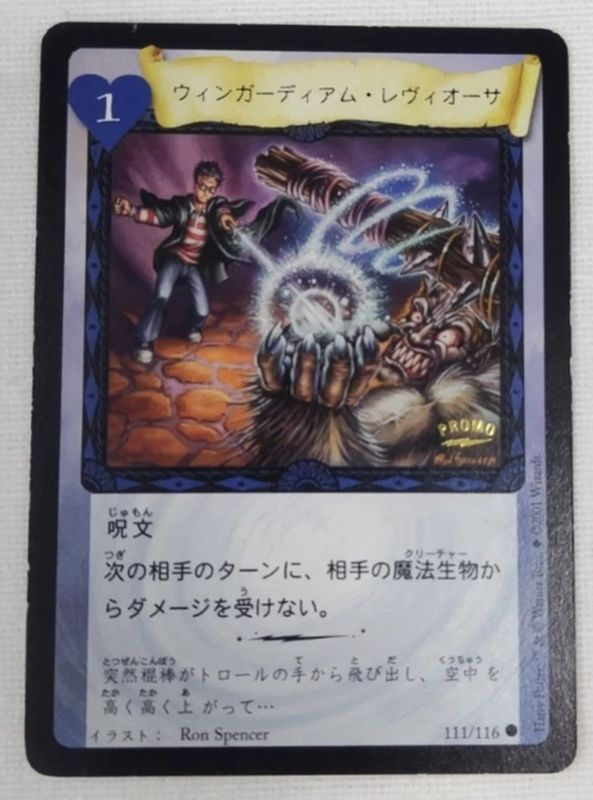
My Personal Ranking of the Early Harry Potter Cards
- UK Chocolate Frog Cards. These have everything I like for an early Harry Potter card, especially the UK version: scarcity, aesthetics, early release, and a shared origin with the books.
- Mystery at Hogwarts. Likely the earliest named Harry Potter card. Nice aesthetics as well.
- “Magic Will Happen” vending machine cards. So much depends on how the hobby comes to view these. Eventually they will end up either at #1 or near the bottom of the list.
- Grolier “Story of America.” Will likely turn out to be quite scarce, and being the earliest gradeable card in the HP universe holds great appeal to me. I’m struggling to not put this higher on the list…
- Panini “Book Illustration” Holo #2. For those collectors who ignore the game cards, many will view this as the first appearance of Harry Potter.
- WOTC TCG Holo. Despite the terrible aesthetics, many in the hobby will see this as the best Harry Potter card out there. Many (most…) collectors would have this at #1.
- Panini Movie Stickers. First depiction of the iconic actors/actresses.
- Quidditch Cards. Nice looking and Quidditch is cool.
- UNO Cards. Nice cards and 2000 copyright, but I’m not that into collecting UNO cards…
- Japanese TCG Promos. They look good and I love Japanese products, but later than these others.
- Trivia Game. Lack of character cards kills it for me.
- 2001 Wizards Harry Potter and the Sorcerer’s Stone. As above, I would rather collect any other set on this list.
Notes
- Per direct correspondence with Shawn McKelvey, illustrator of several early Mattel Harry Potter products.
- University Games company background per Wikipedia’s entry on University Games Corporation. Product details for Harry Potter Quidditch The Game per GameFAQs’ Harry Potter game franchise listing. Component and challenge details for Harry Potter and the Sorcerer’s Stone The Game per a Rooke Books inventory listing describing the game’s contents in full.
- Per Terese Nielsen’s own account of being commissioned alongside seven other artists to illustrate this 24-card series, and per Trading Card Database and COMC listings and Jeff Allender’s House of Checklists, which attributes the product to Cap Candy/Warner Bros. The exact release date is contested. Nielsen recalls “around 2001,” while the checklist source dates the actual product to 2003.
- PSA’s population database lists a “2000 Grolier Inc. Life in America” non-sport set, and individual cards from this same deck (132) have already been graded by PSA under that 2000 date.
- Bill Gates (#40-3, 1996) and Steve Jobs (#119-3, 1998), both from Grolier’s Story of America series, are actively marketed and sold by dealers as rookie-type cards for their respective subjects.
- Based on four independent, unverified collector accounts: a Facebook group member reporting he obtained his copies from vending machine stock, an eBay seller describing a relative who stocked vending machines in the late 1990s, a third seller, contacted directly, who confirmed buying his cards at a card show in 2000, and a fourth seller, located separately, who reports obtaining his cards directly from gumball machines in 2000. None of these accounts has been independently confirmed.
- Per direct correspondence with Shawn McKelvey, the illustrator who designed and illustrated this game for Mattel, and per his own published account: “The first two Harry Potter games: Mystery at Hogwarts and Harry Potter and the Sorcerer’s Stone Trivia Game, released in 2000.” McKelvey Illustration blog, December 31, 2020: http://www.mckelveyillustration.com/new-blog/tag/Mystery+at+Hogwarts
- Per Shawn McKelvey, the illustrator who designed and illustrated this game for Mattel, on the Malfoy/Crabbe silhouette substitution and the 2000 release date: “The art of Malfoy and Crabbe were not approved in time for the initial printing and were replaced by silhouettes. They were included in later printings.” McKelvey Illustration blog, December 31, 2020: http://www.mckelveyillustration.com/new-blog/tag/Mystery+at+Hogwarts
- Per direct correspondence with Shawn McKelvey, who dated this product to 2001 in a list of early 2000s Mattel Harry Potter releases he could recall working on and around.
- Per a 2021 retrospective account by Mattel games executive Paul Fish (People of Play), which lists the games in this order: “HP Trivia, Mystery At Hogwarts and the Quidditch Card Game.” This is a single sentence in an interview, not a documented release schedule.
- Per Fonts In Use, a design history site documenting the album’s typography: “In June 2001 Italian company Panini Group published a 32-page sticker album to tie in with the release of the film…” Corroborated by a second source (Rooke Books) describing it as released “prior to the theatrical release of ‘Philosopher’s Stone.’”
- Confirmed independently by multiple sources (Wikipedia, Fandom’s Harry Potter TCG Base Set entry, HobbyLark, and a Winter Is Coming retrospective), all agreeing without apparent reliance on each other, and consistently framed as timed ahead of the film’s November 2001 release. The specific day within August has not been independently verified.
- The card backs themselves carry a printed copyright mark, “CE TM & © 2001 Warner Bros,” confirming a 2001 release for this specific 20-card First Series (nslists.com’s documentation of the actual printed markings; later UK series drop the year from their markings entirely). No source found gives a specific month, so the August/September placement here is a conservative estimate rather than a confirmed date.
- Sources consistently describe this album as released “for” or “to coincide with” the film’s November 2001 theatrical release, with no specific publication date found. The window has been widened to August as a conservative allowance for retail tie-in merchandise sometimes shipping ahead of a premiere, though no direct evidence places this specific product before November.
- Checklist, card count, and physical dimensions per the Trading Card Database (tcdb.com) entry for this set.
- Per PSA’s own auction-prices database, which lists this card as “Illegibilus #92 (SORCERER’S STONE PC GAME PROMO).”
- Confirmed by multiple independent listings and a TCG collector guide (YamWax), which describes Wingardium Leviosa! as “one from the Japanese launch (an exclusive inserted in CoroCoro comics).”